Configurando uma máquina virtual e Instalando Windows 10 na VMBox
Com a VMBox instalada, vamos configurar uma máquina virtual do Windows 10 para fazer tudo o que a gente tiver precisando nesse sistema operacional não muito amado por pessoas desenvolvedoras.
Se você ainda não sabe como instalar a Virtual Box da Oracle no Ubuntu 20, vai nesse post que expliquei tudo bem direitinho.
A VMBox permite que você configure o computador exatamente como desejar (memória RAM, HD, etc) e isso é muito útil quando temos a imagem ISO de um sistema operacional que não precisa de licença — o que não é o caso do Windows. Então, vou mostrar dois caminhos para configurar uma máquina virtual e instalar o Windows 10:
- Usando uma imagem com licença de para teste;
- Usando uma ISO considerando que você tem a chave para autenticação do Windows.
Passo a passo — Usando a imagem Windows para teste
- Baixe a ISO do Windows 10;
- Descompacte o arquivo;
-
Clique duas vezes no executável .ova, verifique se o campo “Machine Base Folder” aponta para a pasta onde a VMBox armazena as máquinas virtuais;
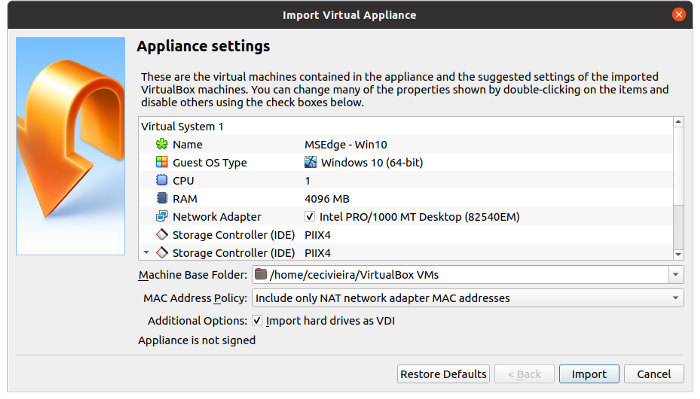
- Tá feito!
-
Para iniciar a máquina, abra a VMBox e faça duplo clique em cima da máquina MSEdge — Windows 10
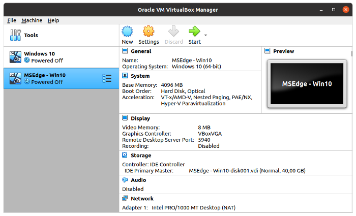
- A senha para login está na página que você fez o download da imagem.
Passo a passo — Usando uma ISO considerando que você tem a chave para autenticação do Windows
- Baixe a ISO do Windows 10;
- Execute a VirtualBox;
-
Clique no botão “New”;
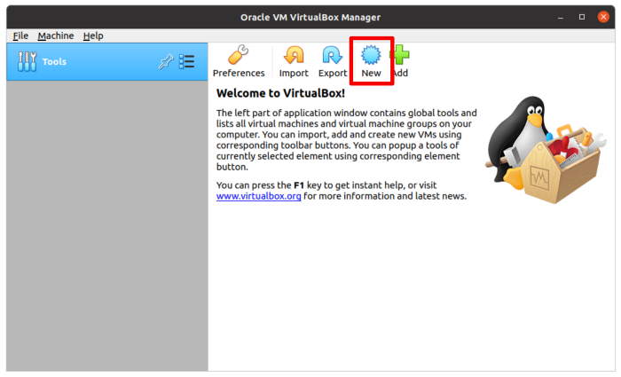
-
Digite um nome para sua máquina virtual e selecione a versão do Windows;
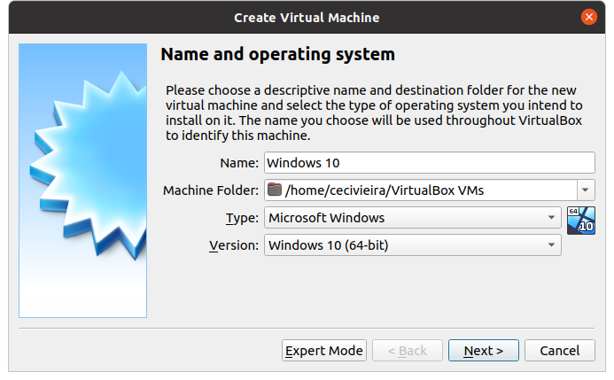
-
Selecione a memória (RAM) desejada e clique no botão “Next”. Nesse caso configurei 4Gb pois é o necessário para o que eu quero fazer;
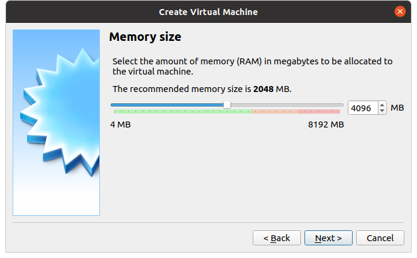
-
Deixe selecionada a opção “Create a virtual hard disk nowa” e clique no botão “Create”;
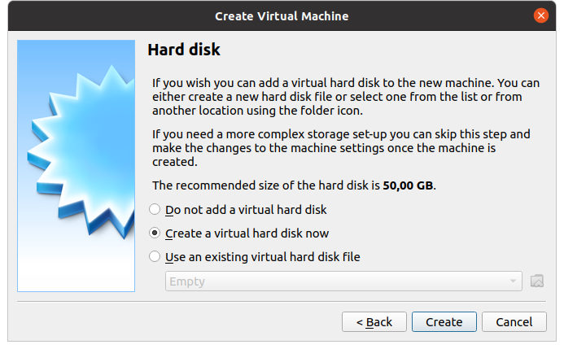
-
Selecione o tipo de disco rígido desejado e clique em “Next”. Sugiro usar o padrão da VMBox, “VDI (VirtualBox Disck Image)”;
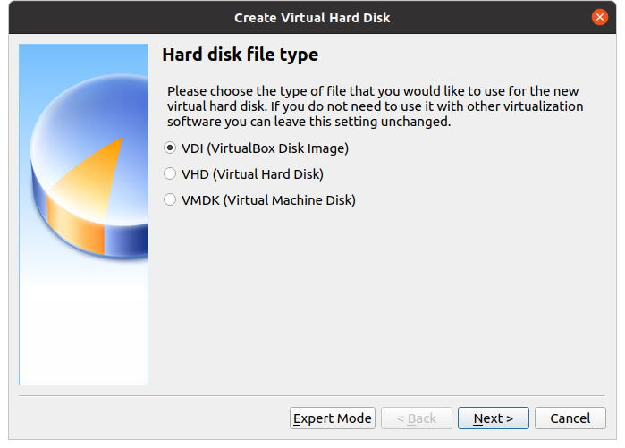
-
Escolha como será o armazenamento em disco e clique em “Next”. A opção “Dynamically allocated” utilizará o espaço em seu disco rígido a medida que for sendo utilizado;
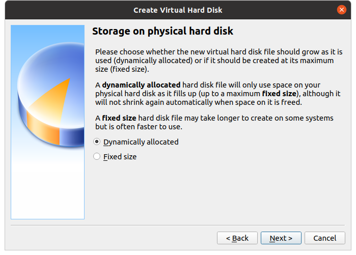
-
Finalmente, verifique o tamanho do HD da máquina virtual e clique em “Create”
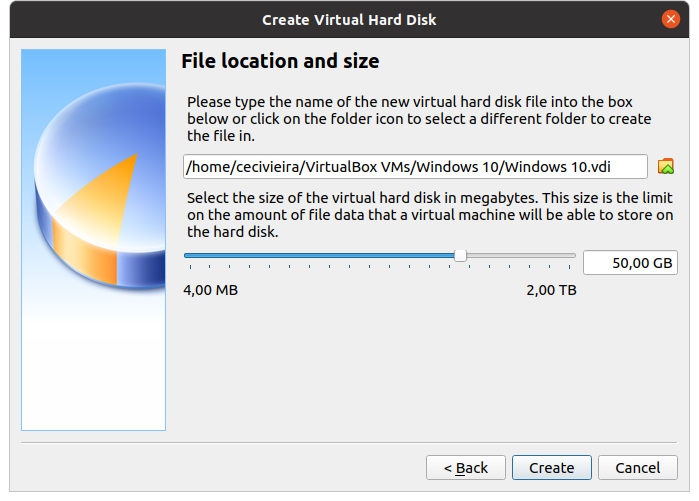
-
Agora vamos instalar o Windows 10 na máquina virtual que acabamos de criar. Dê duplo clique no título da máquina virtual;
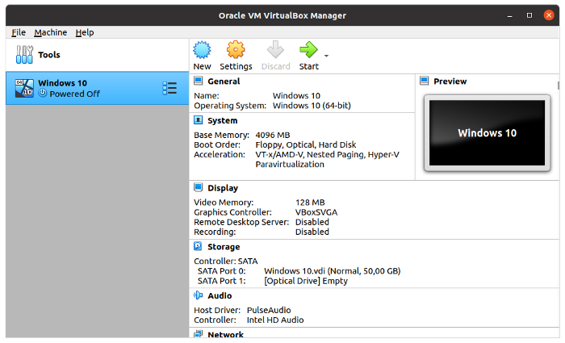
-
Na primeira execução, será necessário localizar o arquivo ISO do Windows. Clique no ícone amarelo da tela;
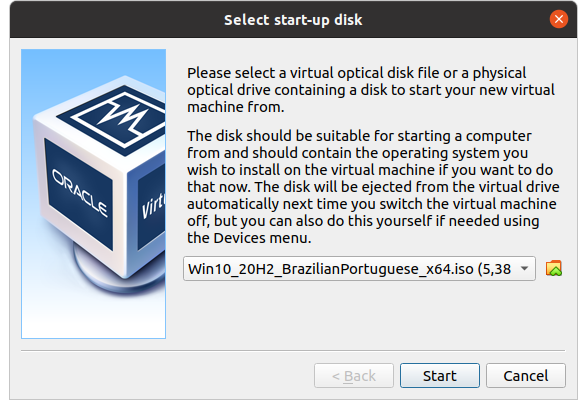
-
Clique em “+ Add” e localize a imagem no seu computador. Após isso, selecione a imagem e clique em “Choose”;
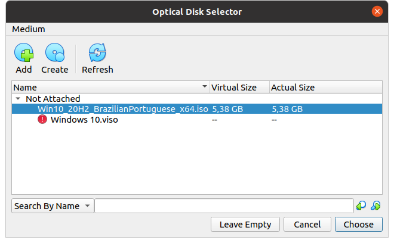
-
Tá feito!
-
Para iniciar a máquina, abra a VMBox e faça duplo clique em cima da máquina que você acabou de criar. Te lembra que na primeira inicialização o Windows vai configurar todinho e te pedir a chave de autenticação, sem ela não é possível instalar esse sistema operacional.
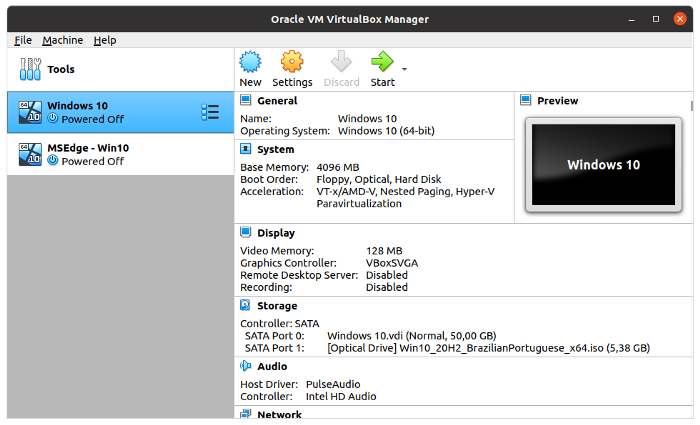
Por aqui tudo funcionou sem problema, espero que tu também tenha conseguido.
-----